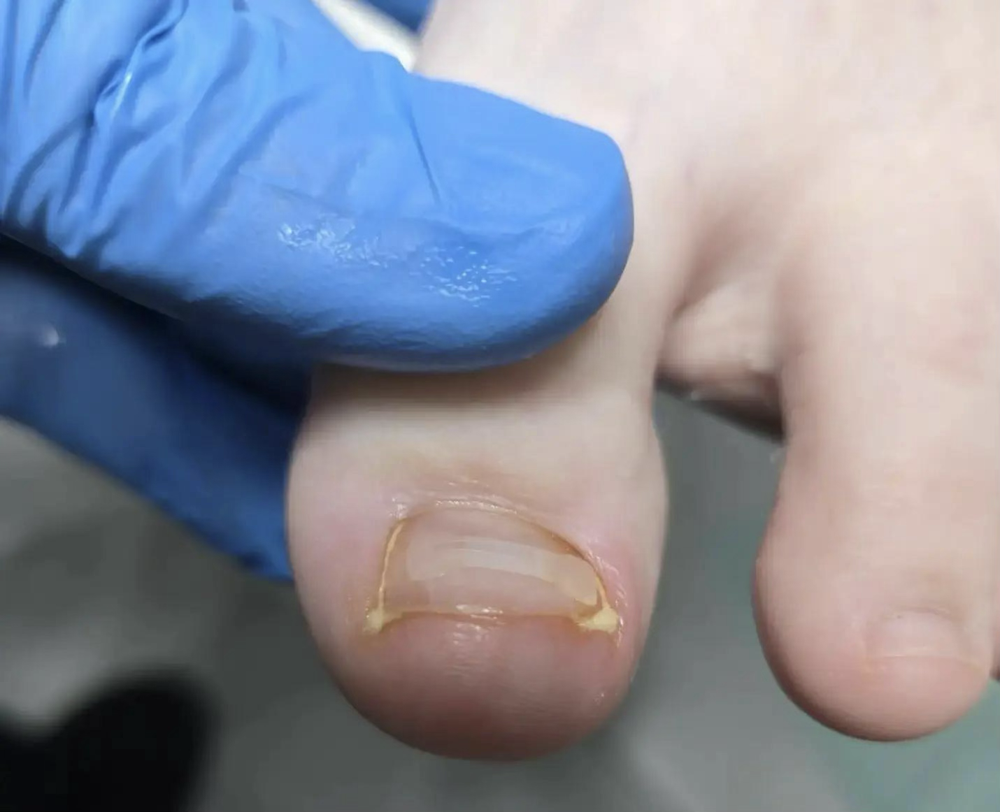
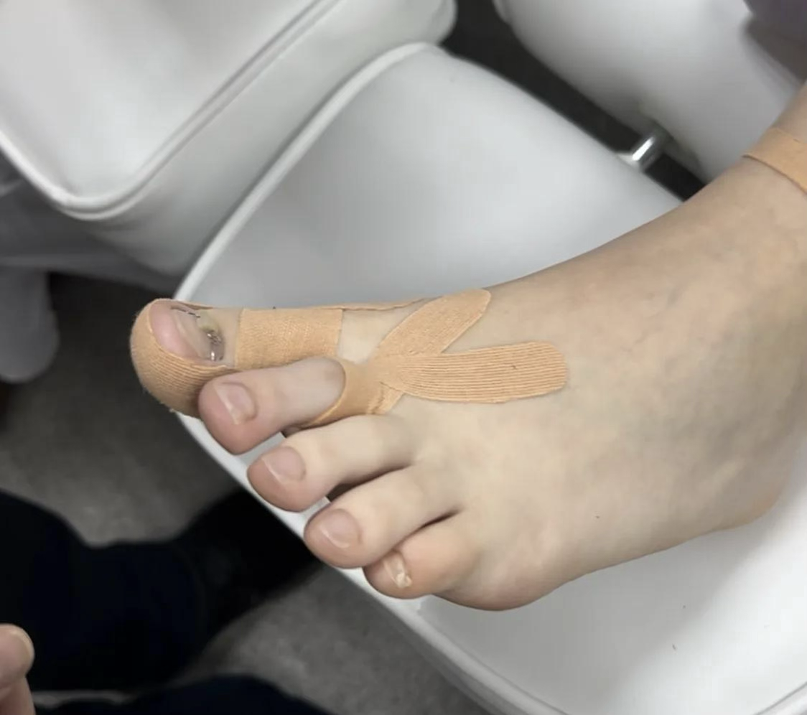

Доп. услуги
Тампонирование
Тампонирование — это щадящая процедура, при которой под край вросшего ногтя устанавливают специальный материал, чтобы создать прослойку между ногтевой пластиной и мягкими тканями бокового валика. Это снижает давление на кожу, предотвращает дальнейшее врастание и помогает ногтю расти в правильном направлении.
Этапы проведения процедуры
- Осмотр. Подолог оценивает степень врастания, состояние ногтевой пластины и окружающих тканей.
- Подготовка. Проблемная зона очищается, кожа и ногтевая пластина обрабатываются антисептиком.
- Установка тампона. Под край ногтя аккуратно заводится специальный материал — каполин, лигазура или силиконовый композит.
- Дополнительная обработка. Тампон пропитывается антисептическим, противовоспалительным или ранозаживляющим составом.
- Фиксация. При объёмной тампонаде палец может быть забинтован, но чаще этого не требуется.
Пример тампонирования

Тейпирование
Тейпирование — это метод вспомогательного ухода, при котором на проблемные зоны стопы наклеивают специальные эластичные ленты. Их задача — временно разгрузить болезненный участок, уменьшить трение в обуви, скорректировать биомеханику стопы или мягко поддержать ткани.
Тейпирование не убирает причину проблемы, например стержень мозоли или грибковую инфекцию, а лишь облегчает симптомы и создаёт условия для восстановления.
Этапы проведения процедуры
- Осмотр. Подолог оценивает состояние стопы, выявляет проблему и подбирает схему наложения.
- Подготовка кожи. Область очищают и высушивают. При необходимости волосы удаляют для лучшего сцепления.
- Наложение. Ленты наклеивают с определённым натяжением по анатомическим линиям.
- Рекомендации. Пациенту объясняют, сколько носить тейп, обычно 3–7 дней, и дают инструкции по уходу.
Пример тейпирования

Дезинфекция обуви
Аппарат для дезинфекции обуви — профессиональное средство защиты от болезнетворных бактерий. Принцип его работы — направленное воздействие на вирусы и грибок озоном и ионами серебра. За счёт высокой проникающей способности дезинфектора в течение полного цикла обработки погибает около 99,8% патогенных микроорганизмов. Эффективному уничтожению инфекции дополнительно способствуют термическая обработка и ультрафиолет.
Преимущества дезинфекции обуви
- Эффективность. Уничтожает грибковые споры и бактерии.
- Безопасность. Обработка проходит без вредных химикатов и подходит даже для детской обуви.
- Продление срока службы. Дезинфицирует обувь изнутри, устраняя неприятный запах без повреждения материалов.
- Профилактика грибковых заболеваний. Регулярная обработка помогает защищать ноги.
Кому нужна профессиональная дезинфекция обуви
- Людям, проходящим лечение грибковых заболеваний ногтей.
- Тем, кто носит обувь в условиях высокой влажности.
- Посетителям бассейнов, тренажёрных залов и бань.
- Всем, кто заботится о гигиене и профилактике грибковых инфекций.
Запишитесь на приём
Оставьте заявку — мы свяжемся с вами и подберём удобное время.